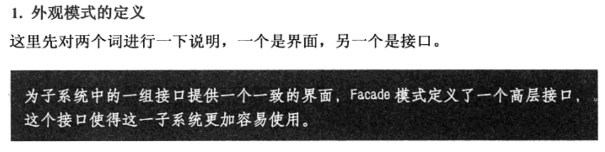

外观模型
另外一个方案,就是到电子市场,找一家专业的装机公司,把具体的要求提出来.装机公司就会把装好的电脑给用户
此时这个专业的装机公司就相当于本章的主角--外观模式
问题:
客户端为了完成某个功能，需要与该功能中的各个子模块进行交互，
因此，如何方便客户端，只要其输入要求就能完成完整的一个功能。
将以上问题进行归纳总结为:
才能让子系统外部的客户端在使用子系统的时候,既能简单地使用这些子系统内部地模块功能,而又不用客户端去与子系统内部的多个模块交互.
解决方法:
外观模式的定义:

界面:主要指的是从一个组件外部来看这个组件，能够看到什么，这就是这个组件的界面，也就是所说的外观.
接口:此处的接口不是指interface,主要指的是外部和内部交互的这么一个通道，通道是指一些方法，可以是类的方法，也可以是interface的方法。
解决方法的总结:
通过引入一个外观类,类里面定义了客户端所需要的简单的方法，然后由外观类再去分别调用内部的多个模块来实现功能。
外观模型_files/Image [1].png)
适用的场景:
外观模式的目的不是给子系统添加新的功能接口，而是为了让外部减少与子系统内多个模块的交互,松散耦合，从而让
有了外观，如果有需要，外部还是可以绕开Facade,而直接调用某个具体模块的接口，这样就能实现兼顾组合共和细节功能
外观模式的调用顺序示意图:
外观模型_files/Image [2].png)